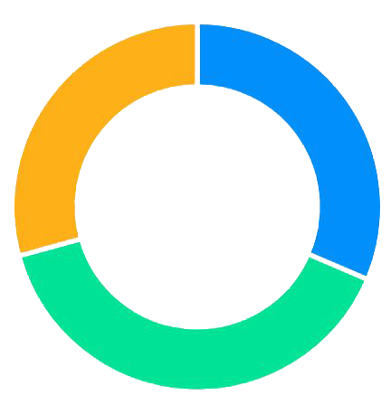
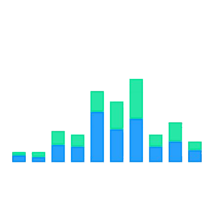
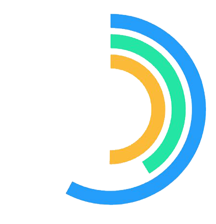

<div class="container">
  <!-- <button (click)="generarDatosTorta(clavesParaPromedios[0])" class="btnImagen"></button>
  <button (click)="generarDatosColuma()" class="btnImagen"></button>
  <button (click)="generarDatosRadial()" class="btnImagen"></button> -->
  <!-- <button (click)="generarDatosRadio()" class="btnImagen">Resultados radio</button> -->

  <div class="buttons-container">
    <button
      class="btnImagen"
      (click)="generarDatosTorta(clavesParaPromedios[0])"
    >
      <!-- Torta -->
      
    </button>
    <button
      class="btnImagen"
      (click)="generarDatosColuma()"
    >
      <!-- Columna -->
      
    </button>
    <button
      class="btnImagen"
      (click)="generarDatosRadial()"
    >
      <!-- Radial -->
      
    </button>
  </div>

  <h1>{{titulo}} <button class="botonInformacion" (click)="setOpen(true)"><ion-icon name="information-circle-outline"></ion-icon></button></h1>
  <div *ngIf="eleccion=='torta'" id="chart">
    <div class="buttons-container">
      <button *ngFor="let clave of clavesParaPromedios" class="btnImagen btnTexto" (click)="generarDatosTorta(clave)">
        {{ cambiarTexto(clave) }}
      </button>
    </div>
    <!-- <h1>Valores individuales</h1> -->
    <apx-chart
      [series]="chartOptions.series"
      [chart]="chartOptions.chart"
      [labels]="chartOptions.labels"
      [responsive]="chartOptions.responsive"
    ></apx-chart>
    <!-- <p>Resultados específicos de cada pregunta individualmente.</p> -->
  </div>
  <div *ngIf="eleccion=='columna'" id="chartC">
    <!-- <h1>Resultados promedios</h1> -->
    <apx-chart
      [series]="chartOptionsColumn.series"
      [chart]="chartOptionsColumn.chart"
      [dataLabels]="chartOptionsColumn.dataLabels"
      [plotOptions]="chartOptionsColumn.plotOptions"
      [yaxis]="chartOptionsColumn.yaxis"
      [xaxis]="chartOptionsColumn.xaxis"
      [legend]="chartOptionsColumn.legend"
      [colors]="chartOptionsColumn.colors"
      [grid]="chartOptionsColumn.grid"
    ></apx-chart>
    <!-- <p>Promedio individual de cada respuesta, para demostrar cada punto.</p> -->
  </div>
  <div *ngIf="eleccion=='radial'" id="chartRadial">
    <!-- <h1>Resultados generales <ion-button expand="block" (click)="setOpen(true)">Open</ion-button> </h1> -->
    <apx-chart
      [series]="chartOptionsRadial.series"
      [chart]="chartOptionsRadial.chart"
      [plotOptions]="chartOptionsRadial.plotOptions"
      [labels]="chartOptionsRadial.labels"
    ></apx-chart>
    <!-- <p>Promedio calculado en base a la calificación general que te da cada encuesta, promediando las diferentes respuestas.</p> -->
  </div>
  <ion-fab slot="fixed" vertical="bottom" horizontal="end" >
  <ion-fab-button class="iconos" (click)="volverAtras()" >
    <ion-icon name="arrow-back" ></ion-icon>
  </ion-fab-button>
</ion-fab>
<ion-modal [isOpen]="isModalOpen">
  <ng-template>
    <ion-header>
      <ion-toolbar>
        <ion-title>Información</ion-title>
        <ion-buttons slot="end">
          <button class="botonCierre" (click)="setOpen(false)">X</button>
        </ion-buttons>
      </ion-toolbar>
    </ion-header>
    <ion-content class="ion-padding">
      <p>
        {{explicacion}}
      </p>
    </ion-content>
  </ng-template>
</ion-modal>
</div>